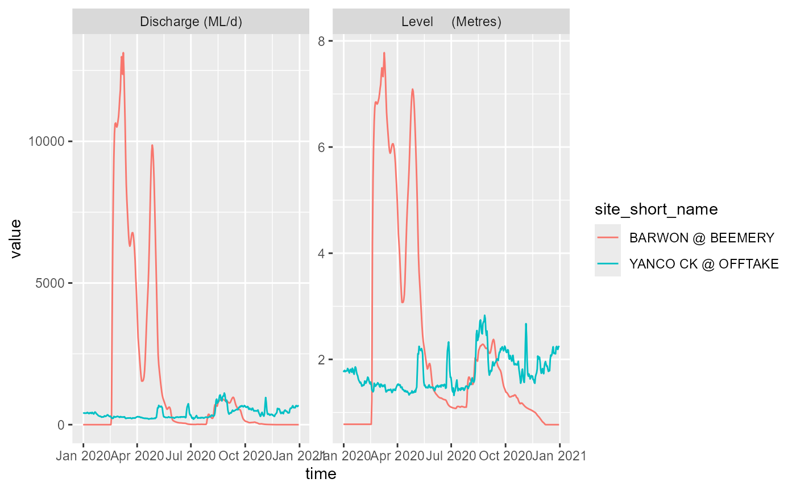
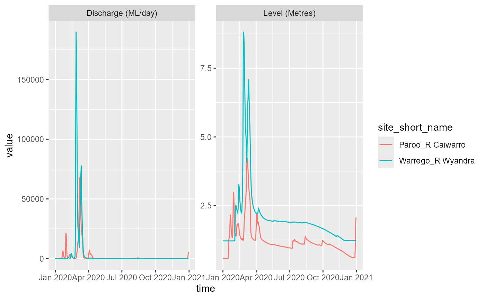

Most examples use Victorian water data for hydstra or BOM for KiWIS, but this should work wherever we have a link to a hydstra or Kiwis API. Many sites are listed by Kisters, though not all make it easy to find their path.
At the most basic, we can use a raw https path, demonstrated with Victoria,
ds_http <- get_datasources_by_site(portal = 'https://data.water.vic.gov.au/WMIS/cgi/webservice.exe?',
site_list = c('233217', '405328', '405331', '405837'))
ds_http
#> # A tibble: 10 × 2
#> site datasource
#> <chr> <chr>
#> 1 233217 A
#> 2 233217 TELEM
#> 3 233217 TELEMCOPY
#> 4 405328 A
#> 5 405328 TELEM
#> 6 405328 TELEMCOPY
#> 7 405331 A
#> 8 405837 A
#> 9 405837 TELEM
#> 10 405837 TELEMCOPYHydstra
In theory, we should be able to call the hydstra functions at any Hydstra source. The catch is, finding the API path is not always straightforward. For example, this should work for Washington Department of Ecology, California department of water resources, and Western Australia, but none of those addresses work. Either those orgs don’t publish their APIs, or there are undiscovered ‘…/webservice.exe?’ paths there waiting to be discovered and used.
Australian states
In addition to Victoria, New South Wales and Queensland have public
portals and are available by name as portal arguments. To
demonstrate, we can use get_datasources_by_site() to see
what datasources are available (note the major differences between the
states):
nsw_ds <- get_datasources_by_site(portal = 'NSW',
site_list = c("422028", "410007"))
nsw_ds
#> # A tibble: 11 × 2
#> site datasource
#> <chr> <chr>
#> 1 422028 AUTOQCNOWTELEM
#> 2 422028 A
#> 3 422028 PROV
#> 4 422028 QA
#> 5 422028 MIR_DRR_PROV
#> 6 422028 WEBPROV
#> 7 410007 AUTOQCNOWTELEM
#> 8 410007 A
#> 9 410007 PROV
#> 10 410007 QA
#> 11 410007 MIR_DRR_PROV
qld_ds <- get_datasources_by_site(portal = 'QLD',
site_list = c("423203A", "424201A"))
qld_ds
#> # A tibble: 8 × 2
#> site datasource
#> <chr> <chr>
#> 1 423203A FDR
#> 2 423203A A
#> 3 423203A TE
#> 4 423203A RAW
#> 5 424201A FDR
#> 6 424201A A
#> 7 424201A TE
#> 8 424201A RAWTraces and plots
Now we can get_ts_traces() for A, just to
keep things consistent for NSW:
nsw_ts_days <- get_ts_traces(portal = 'NSW',
site_list = c("422028", "410007"),
datasource = "A",
var_list = c("100", "141", "450"),
start_time = 20200101,
end_time = 20201231,
interval = "day",
data_type = "mean",
multiplier = 1,
returnformat = 'df')
ggplot(nsw_ts_days, aes(x = time, y = value, color = site_short_name)) +
facet_wrap(~variable_short_name, scales = 'free') +
geom_line()
and QLD:
qld_ts_days <- get_ts_traces(portal = 'QLD',
site_list = c("423203A", "424201A"),
datasource = "A",
var_list = c("100", "141", "450"),
start_time = 20200101,
end_time = 20201231,
interval = "day",
data_type = "mean",
multiplier = 1,
returnformat = 'df')
ggplot(qld_ts_days, aes(x = time, y = value, color = site_short_name)) +
facet_wrap(~variable_short_name, scales = 'free') +
geom_line()